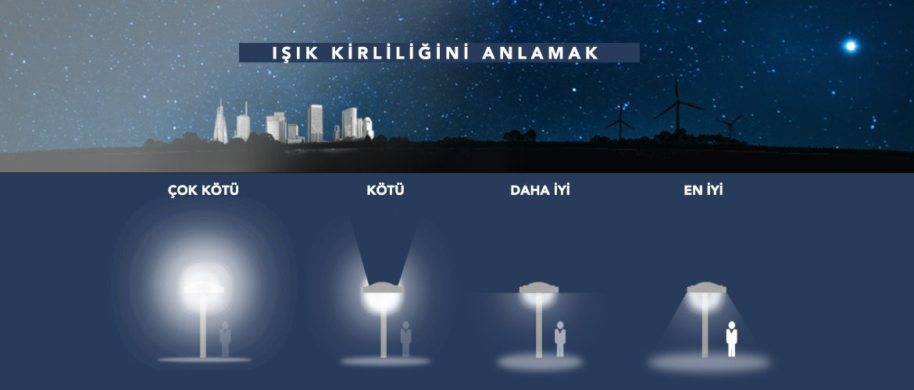

Işık Kirliliği Hakkında 20 soruluk bir anket formu
1-Okuduğunuz okulda size ışık kirliliği hakkında yeteri kadar bilgi verildi mi?
2-Herhangi bir medya yoluyla ışık kirliliği hakkında haberler okudunuz mu?
3-Işık kirliliğinin zararlarını , kirliliğe karşı yapılması gereken önlemler vb. bilgileri hangi yollarla öğrendiniz?
4-Işık kirliliğine karşı önlemler alıyormusunuz?
5-Işık kirliliğine karşı nasıl önlemler alıyorsunuz?
6-Işık kirliliğine neden olanlara tepkiniz oluyor mu?
7-Işık kirliliğine karşı proje veya benzeri çalışmalarda bulundunuz mu?
8-Evdeyken aydınlatmaları ne ölçüde açarsınız?
9-Evinizde ya da şirket ofisinizde aydınlatma araçlarınızda hareket sensörlü sistem kullanılıyor mu?
10-Geceleri telefonunuzun veya bilgisayarınızın yerleşik gece modu özelliğini kullanır mısınız?
11-Oturduğunuz şehirdeki ışık kirliliği sizin hayatınızı etkiliyor mu?
12-Buluğunduğunuz şehirden veya yerleşkeden yıldızları görebiliyormusunuz?
13-Fazla gece aydınlatması evlerden içeri sızmakta, uykusuzluğa sebep olmaktadır.Oturduğunuz mahalledeki ışık yoğunluğu sizi rahatsız ediyor mu?

14-Buluğundunuz şehrin sokak lambaları hangi şekildeki gibi ışık vermektedir?
15-Şehirler de yapılan yanlış şekilde kullanılan ışık kaynaklarını(yukarıdaki sorudaki daha kötü seçeneğinde bulunan sokak lambası vb.) yetkililere bildiriyor musunuz?
16-Türkiye de ışık kirliliği için yapılan önlemler sizce yeterli mi?
17-Türkiye de yaşayan insanların ışık kirliliği hakkında yeteri kadar bilince sahip olduğunu düşünüyormusunuz?
18-Türkiye deki ışık kirliliği ile ilgili çalışmaları takip ediyor musunuz?
19-Türkiye de okullarda yeteri kadar ışık kirliliği vb kirlilikler
hakkında yeteri kadar bilgi verildiğini düşünüyor musunuz?
20-Türkiyenin ışık kirliliğini azaltma konusundaki çalışmalarını değerlendirirseniz 5 üzerinden kaç puan verirsiniz?